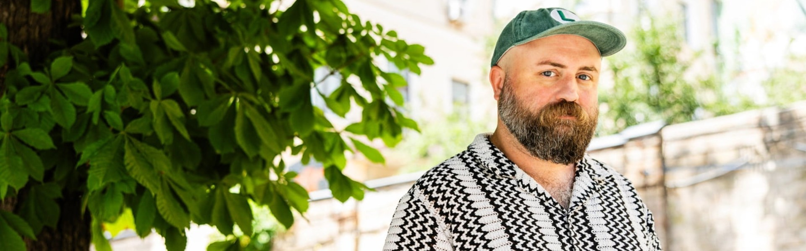
Race Against the War: How Leonid Marushchak and volunteers are rescuing Ukrainian cultural heritage
01.07.26
The full-scale war became a challenge not only for the defense forces but for the whole unwieldy government sector. Heritage monuments, including museum collections, became endangered. As in many other instances, volunteers came to the rescue. They have been evacuating cultural treasures, often risking their lives, and trying to get ahead of the frontline and marauding that is happening under occupation. Leonid Marushchak is one of the most active drivers of this process. He spoke to Kunsht about what they managed to rescue from the war, and what can’t be rescued anymore.
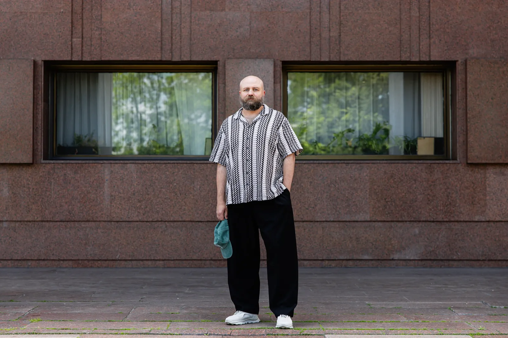
In 2015, we began exploring the eastern and southern regions of Ukraine. As part of the DE NE DE¹ initiative, expeditions to less-studied regions were conducted. There, we often had to deal with local museums, so in 2016, we launched a project, “The Museum is Open for Renovation”, based at the Sloviansk and Lysychansk Local History Museums. By the end of 2017, we were already collaborating with all museums in the Donetsk and Luhansk regions that held the state’s share of the Museum Fund of Ukraine, and by 2021, with 75 museums across the country. We organized events, and their employees attended our workshops. We created a museum community that enabled regular communication, interaction, and the exchange of experiences.
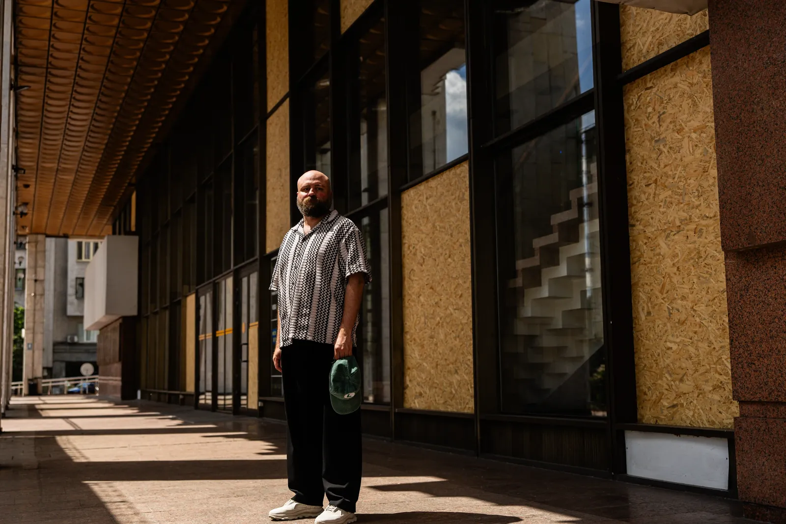
When the whole world was telling us that the war would break out soon, the Ukrainians traditionally dismissed it with “it’ll work out somehow,” but on February 22, 2022, we had a joint Zoom call with museum employees from Donetsk and Luhansk regions, representatives of the Ministry of Culture, and local authorities, where we said: we don’t want to cause panic, but if the invasion begins tomorrow, are we ready for this? Will the evacuation be conducted? If yes, then great, if no, what do we need for it?
Most people remained optimistic at that time. We discussed everything and had the impression that it wasn’t all that bad, and then, February 24² happened. I was under the impression that, given the sad experience of 2014³, the process of evacuation of historical and cultural treasures from the combat zone would be launched automatically. And as we are a grassroots nongovernmental initiative, it’s not our task. I thought that the Ministry of Culture, the State Emergency Service, the police, and the State Security Service would operate like clockwork, but I decided to make sure anyway and called one of the museums. They told me that the evacuation hasn’t started yet because they didn’t have an order from the Ministry of Culture. In the Ministry, they said they couldn’t issue the order because there was no request from the regional administration. The regional administration said they couldn’t submit a request because they didn't get lists from the museum. A closed circle.
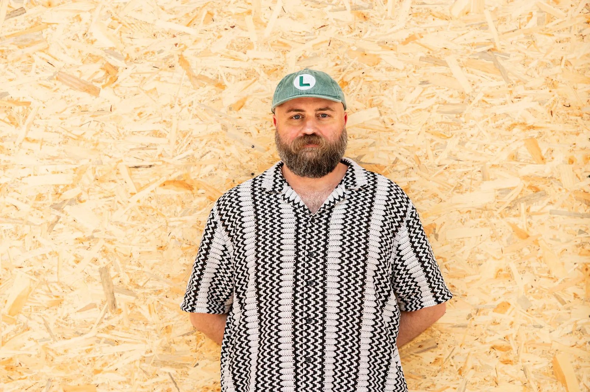
We offered a functional algorithm and our participation in the process: physical, moral, material, empathic, any. And the process has started. At first, it was a very sporadic activity. We didn’t know what to do or how the situation would unfold, but over time, we managed to work in parallel across several regions, and later it scaled up to almost industrial levels in terms of packaging production for the evacuation and the number of people involved.
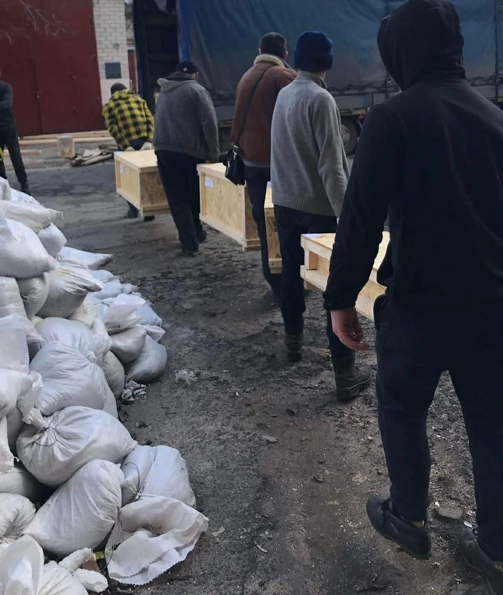
The experience of total war affected many things. First of all, territories near the frontline began to be deserted. It was very risky for museum collections: where there’s war, there’s marauding, destruction, and simply neglect; for example, a pipe bursts and everything is drowned. For the whole of 2022 and 2023, we were constantly on the move; we went to see what was happening on the ground, packed and moved museum collections, archives, and library funds, and searched for places where cultural objects could have been stored, for example, museums at former factories.
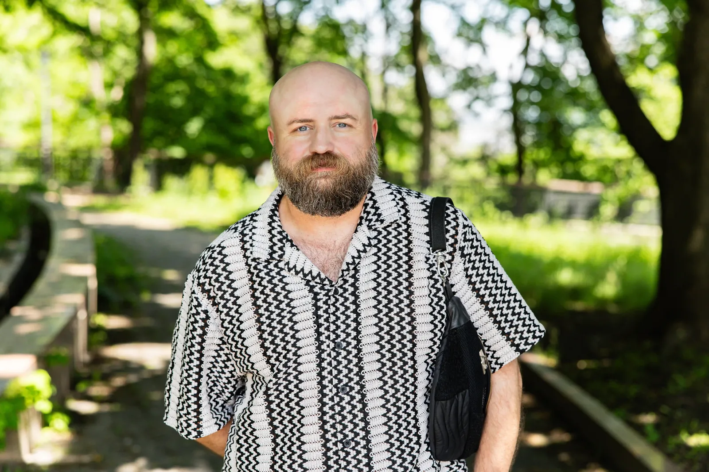
This wasn’t just a matter of evacuation itself. It was about stimulating the processes. If the whole thing started later, we would lose a lot because the frontline was moving. We focused on the regions with active combat; we acted intuitively because we didn’t know how the situation would unfold, but our intuition hasn’t failed us.
When part of the Kherson region was deoccupied, we understood that it was too early to celebrate and we needed to rescue all that was left while we could. The occupants stole items from the display, but most of them, especially the funds, remained in place. We spent half a year there with the museum employees, packing and moving things.
There are five people in our NGO, but many others contributed to the evacuation. It’s a rather costly activity, but it’s not about the money. It isn’t as costly to buy packaging materials and pack everything, as it is to start the process at a location. You have to visit it approximately 20 times: beg, argue, and then find a place where to take all those things.
It’s hard to tell how much it all costs, we don’t count if we’re being honest. We had our own resources; donors provided packaging materials, but we never took money from anyone for the evacuation itself because we couldn’t report on or disclose these things: where the objects were taken to and from. Currently, we rely solely on voluntary donations.
The evacuation near the frontline involves physical risks, but my inner motor blocks this fear. The scariest thing for me is when you fight for objects in vain. Whatever happens, the law is still the law. For instance, when you come, and the museum is locked, but not destroyed. You know the collection is there, even though you were told everything was removed. The frontline is getting closer, and everyone moved out. You stand, look at the museum, and know that the historical and cultural treasures that belong to the Ukrainian people are stored there, but you can’t do anything; you’re forced to turn and leave, satisfying yourself with the fact that at least you’ve seen the museum for the last time.
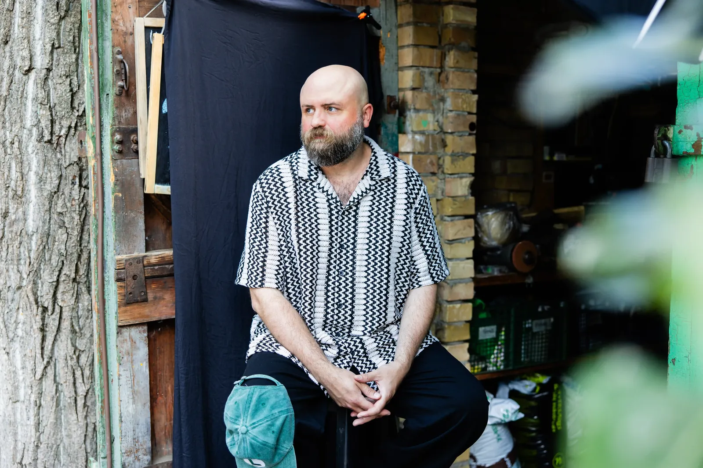
Churches and monasteries are a separate issue. A huge number of religious treasures are kept there that belong to religious communities, like old icons that could adorn any museum, but there’s no state purview there. Museums at educational institutions are also poorly regulated. Nobody knows who has jurisdiction over them and who should be responsible for the evacuation in case of a threat.
We stopped counting the number of evacuated objects; we intentionally avoid talking about numbers, because they undermine the uniqueness of heritage. We try to emphasize that each item is valuable and deserves appropriate attention.
When I visit the places where hundreds of thousands of exhibits are stored, I get scared. It looks epic, very cinematographic, but you understand that it’s been lying like that for 4 years. And nobody knows how long it will.
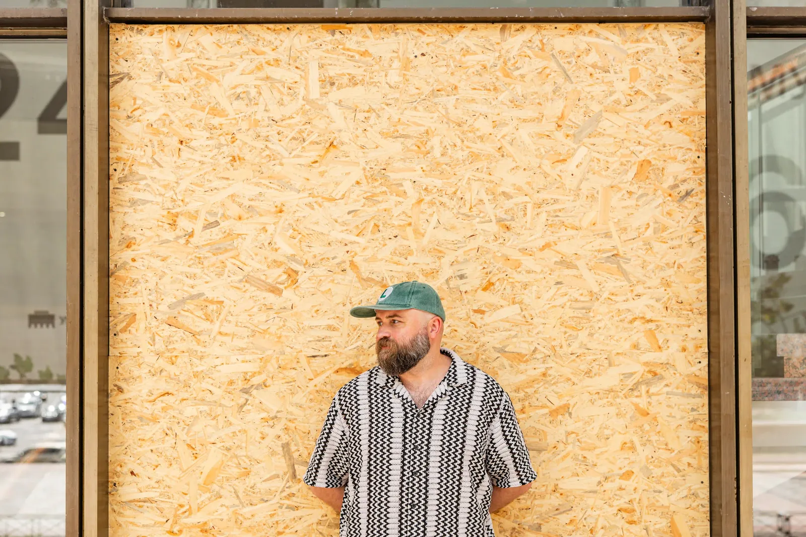
I like to mention a story about a lion sculpture from Bakhmut⁵. When we started working with the local museum, they showed it to me in their display and called it “the lion cub”. The employees loved it very much and considered it a symbol of the museum. At the beginning of the full-scale invasion, the museum was closed for renovation, and the whole display was stored in the vault. I couldn’t evacuate the sculpture because, even with the employees’ help, we couldn’t lift it. And when we realized that the place where it was located was bombed, we decided to come and take it anyway. I knew it was very risky for everyone who would accompany me, because the city was then being reduced to ruins. Fortunately, we managed to rescue the sculpture. Now, I see the lion heart of Bakhmut in this “lion cub”.
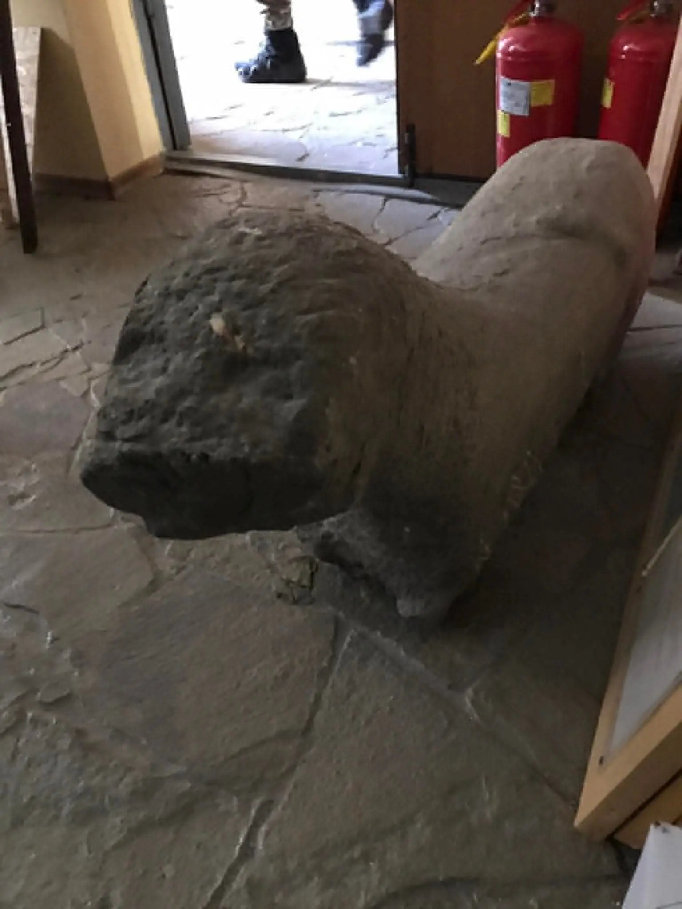
Another story I would like to tell is about rescuing a carved wooden panel by a completely obscure amateur artist from Kramatorsk. In 2020, during the quarantine, I was scrolling through social media about the local history of the Donetsk and Luhansk regions for days and stumbled upon a post about Zinaida Fomenko, who, in her yard, created a marvelous world: carved wooden birds, animals, and children. It’s the purest naive art.
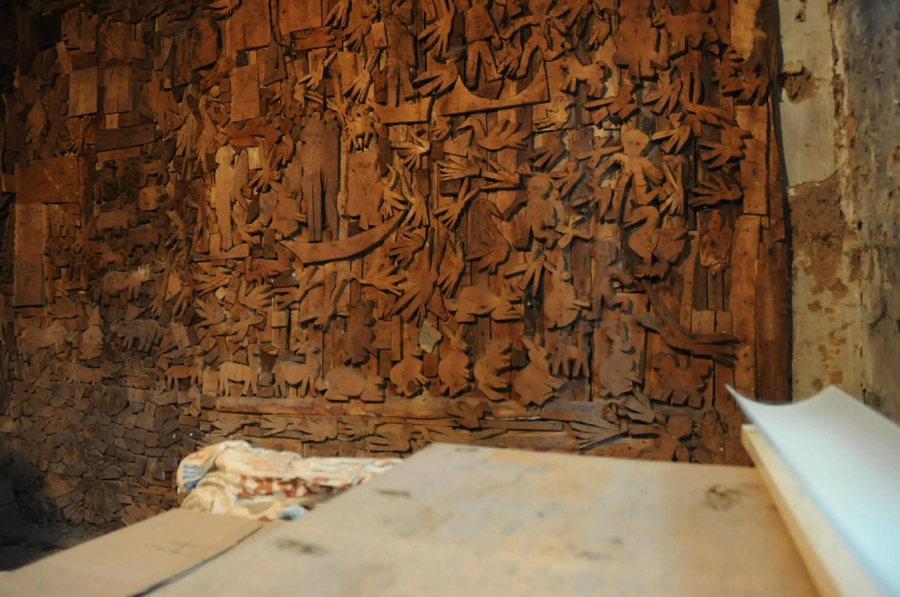
I immediately texted the post’s author, Volodymyr Kotsarenko, and we went to Kramatorsk. Fomenko died in 2017. Many of her works were used as firewood. Her son was living in her house; he was refusing to talk to us for a long time, but eventually realized our intentions were good and showed us the surviving panel his mother had created. Until recently, we were negotiating its rescue. The descendants had been refusing for a long time, but together with the Museum of Naive Art charitable foundation, we were able to evacuate the work.
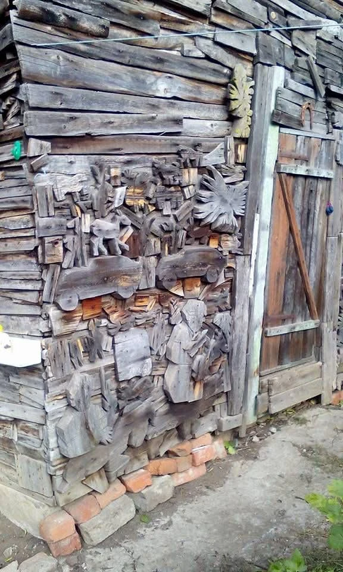
This is an object that hasn’t yet acquired value, hasn’t yet been identified as something that belonged in the museum; it was possible that nobody would even find out about it, but thanks to the larger circle of people who cared, Kramatorsk has gained a very powerful, vivid monument, and we have managed to rescue it.
In 2024, we were passing through Pokrovsk⁶ for the millionth time. I saw the sculpture of a deer by Zhanna Kadyrova⁷, installed in 2019, in the park. A panic started to rise within me, because, since 2022, we’ve been working restlessly to rescue artworks, including modern art, and we have completely forgotten Zhanna’s sculpture. The negotiations started. It was a very difficult process, but with a happy ending: we managed to reach an agreement. Together with the Pokrovsk administration, we evacuated the deer sculpture and a monument to Leontovych⁸, my fellow compatriot from Podillia⁹. Kadyrova’s work represents Ukraine at the Venice Biennale and has become a modern symbol with completely new meanings.
There are things, like architecture, that are impossible to evacuate, and it’s very important to document them. In 2023, I lost the phone I had been using since 2013. It had lots and lots of pictures from the regions that are currently occupied. I didn’t manage to archive and properly attribute everything.
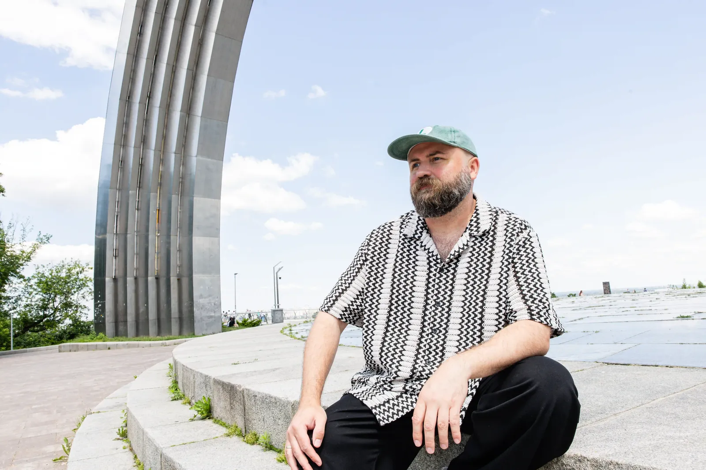
How much territory we’ve lost now, and how much visual material we need, is a disaster. For example, here is a very important detail. The Pokrovsk deer stood on a pedestal where a Su-7 airplane had formerly been mounted; the plane was installed in the 1960s and remained there until 2005. When we started working on the Venetian project, we managed to find only three photos of the plane, thanks to the Pokrovsk Historical Museum, and it had been there for forty years, in the central park of a large industrial city, where all the events were held. Only three! We lack visual material that would help us, in any way, reconstruct in our memory the history and cultural landscape of the territories that suffered from the war.
We lost Polina Raiko's house in Oleshky after the Kakhovka Hydroelectric Power Plant dam was blown up. Olena Afanasieva launched a public campaign and asked people to send her photos of the house so it could be recreated. She received over 2,500 photos. It’s a beautiful example, but there’s so much that’s impossible to recreate, unfortunately.
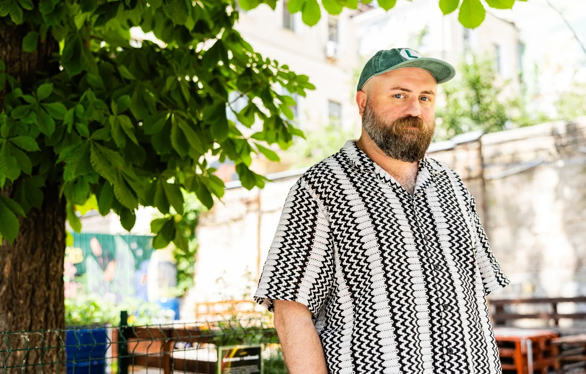
The Ministry of Culture is the main institution responsible for the policy of protecting, preserving, and rescuing the historical and cultural treasures. I have a high hope that the current minister will succeed in building an internal system that would make the institution more active. As a person who always demands more than is currently possible, I strive for tectonic shifts in the protection, preservation, and popularization of historical and cultural treasures; systematic work is required to shape our vision of the future through the prism of these objects.
Footnotes
1. DE NE DE (Ukrainian for "here and there") is a program of culturological expeditions to Ukrainian regions. It appeared in response to the decommunization laws. It investigates processes of decommunization, changes in the urban environment in the context of ideological shifts, and ways of representing history in public spaces, etc.
2. At night on February 24, 2022, Russia launched the full-scale invasion.
3. In 2014, Russia annexed Crimea and occupied parts of the Donetsk and Luhansk regions.
4. Bakhmut is a city in the Donetsk region that became an important strategic point during the war and saw fierce combat in 2022-2023. During those months, it was almost completely destroyed. Currently, it's under Russian occupation.
5. Pokrovsk is a city in the Donetsk region that, in 2024, was close to the front line. Currently, Pokrovsk is an active battlefield.
6. Zhanna Kadyrova is a prominent modern Ukrainian artist and sculptor.
7. Leontovych was a world-famous Ukrainian composer at the beginning of the 20th century. He is best known for his "Shchedryk" carol; the still-popular "Carol of the Bells" is its English version.
8. Podillia is a region in Western-Central Ukraine.
9. Polina Raiko was a naive artist who painted her house in Oleshky with vivid pictures. It became a popular tourist destination. She died in 2004. The house was added to the list of local monuments in 2021. After the full-scale invasion started, the house was under occupation and was probably destroyed by the flood after Russia blew up the Kakhovka dam.
The reportage is published with the support of the Alfred P. Sloan Foundation.